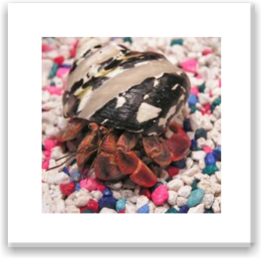

FOOD
Hermit crabs can eat vegetables and fruits. But these should be removed the next day because they are perishable. They can also eat pieces of lettuce, grapes,and bananas. Hermit crabs can also eat dry cereal, peanut butter, popcorn,shellfish and crackers. They can't eat any extremely hot or spicy foods. Give them a pinch of food three times a week. You can feed them any hermit crab foods which can be purchased in all different fish or crab stores.
